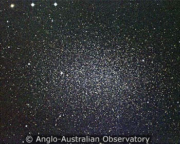

Very diffuse galaxies that emit much less light per unit area than normal galaxies are known as low surface brightness galaxies. With luminosities that are at most only a few percent brighter than the sky background, they are very difficult to detect. Although some dwarf galaxies had been discovered earlier, the first sizable low surface brightness galaxy, called Malin 1, remained undetected until the late 1980s. At 5 times the size of the Milky Way and only 1% as bright as a normal galaxy, this galaxy remains the largest spiral galaxy ever discovered.
From this extreme size down to the more common dwarf galaxies, low surface brightness galaxies span an enormous range of size and mass. Their discovery prompted astronomers to revise statistics on galaxy types and numbers, and it is now believed that low surface brightness galaxies may account for up to 50% of the total population of galaxies. Extremely dominated by dark matter through to their central regions, they may also be the location for at least some fraction of the missing matter in the Universe.
The objects that fall under the banner of low surface brightness galaxies appear to be evolving much more slowly than normal galaxies, and still in an early stage of formation. They tend to be more isolated and contain more gas at lower densities than what is typically found in normal galaxies, and it is believed that this low gas density hinders the formation of massive stars. Since massive stars are the production plants for heavy elements, low surface brightness galaxies have much lower metallicities than normal galaxies, another indicator of the slow development of these objects.